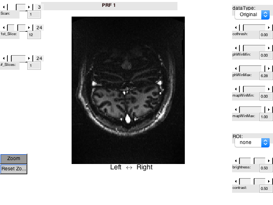

t_initVistaSession
Illustrates how to initialize a mrVista session with functional MRI data using sample data set erniePRF
Dependencies: Remote Data Toolbox
This tutorial is part of a sequence. Run t_initAnatomyFromFreesurfer prior to running this tutorial.
Summary
- Download erniePRF sample data set - Create new folder, and move EPI and inplane files there - Specify session parameters - Initialize and visualize
Tested 07/21/2016 - MATLAB r2015a, Mac OS 10.11.6
See also: t_initAnatomyFromFreesurfer
Winawer lab (NYU)
Contents
Download ernie raw MRI data
% Remember where we are curdir = pwd(); % If we find the directory, do not bother unzipping again forceOverwrite = true; % Get it erniePRFOrig = mrtInstallSampleData('functional', 'erniePRF', [], forceOverwrite);
Organize functional data
% Create a new directory in 'scratch' for the tutorial erniePathTemp = fullfile(vistaRootPath, 'local', 'scratch', 'erniePRF'); % Navigate and create a directory cd(erniePathTemp) % Set up Raw data file directory mkdir Raw; % These are the EPI and inplane files downloaded with the pRF sample data fname{1} = fullfile(erniePRFOrig, 'Raw', 'Ernie_EPI01.nii.gz'); fname{2} = fullfile(erniePRFOrig, 'Raw', 'Ernie_EPI02.nii.gz'); fname{3} = fullfile(erniePRFOrig, 'Raw', 'Ernie_EPI03.nii.gz'); fname{4} = fullfile(erniePRFOrig, 'Raw', 'ErnieInplane.nii.gz'); % Move the files from the downloaded directory to the new, clear directory for ii = 1:length(fname) copyfile(fname{ii}, fullfile(erniePathTemp, 'Raw')); end
Warning: Directory already exists.
Initialize a vistasoft session
% These files have been copied to the scratch directory. Use local paths. epiFile{1} = fullfile('Raw','Ernie_EPI01.nii.gz'); epiFile{2} = fullfile('Raw','Ernie_EPI02.nii.gz'); epiFile{3} = fullfile('Raw','Ernie_EPI03.nii.gz'); inplaneFile = fullfile('Raw','ErnieInplane.nii.gz'); anatFile = fullfile('3DAnatomy', 't1.nii.gz'); % Generate the expected generic params structure params = mrInitDefaultParams; % And insert the required parameters: params.inplane = inplaneFile; params.functionals = epiFile; params.sessionDir = erniePathTemp; % Specify some optional parameters % 3D volume anatomy (originally from freesurfer) params.vAnatomy = anatFile; % Drop the first 8 volumes in each scan, keep remaining volumes params.keepFrames = [8 -1; 8 -1; 8 -1]; % Subject ID. For most labs, it is probably safest to use an % anonymized coding scheme params.subject = 'Ernie'; % Name for each of the three scans params.annotations = {'PRF 1', 'PRF 2', 'PRF 3'}; % Do the initialization: ok = mrInit(params); % Open a graphical user interface to ensure that we succeeded vw = mrVista('inplane');
***** [mrInit] Initializing Session erniePRF ***** (21-Jul-2016 10:06:23) [niftiCheckQto] NIFTI header origin is at or outside the image volume. [niftiCheckQto] Origin to the image center [52.000,40.000,12.000] pix. [niftiCheckQto] NIFTI header origin is at or outside the image volume. [niftiCheckQto] Origin to the image center [52.000,40.000,12.000] pix. [niftiCheckQto] NIFTI header origin is at or outside the image volume. [niftiCheckQto] Origin to the image center [52.000,40.000,12.000] pix. [mrInit]: Finished initializing mrVista session. (21-Jul-2016 10:06:25) [niftiCheckQto] NIFTI header origin is at or outside the image volume. [niftiCheckQto] Origin to the image center [80.000,104.000,12.000] pix. ***** [mrInit] Finished Initializing Session erniePRF (21-Jul-2016 10:06:25)***** Initializing Inplane view Attaching menus [niftiCheckQto] NIFTI header origin is at or outside the image volume. [niftiCheckQto] Origin to the image center [80.000,104.000,12.000] pix. Attaching popup menus Attaching sliders Could not find /Users/jonathanwinawer/matlab/git/vistasoft/local/scratch/erniePRF/Inplane/userPrefs.mat Done initializing Inplane view
Clean up
close(viewGet(vw, 'figure number'); mrvCleanWorkspace cd(curdir)